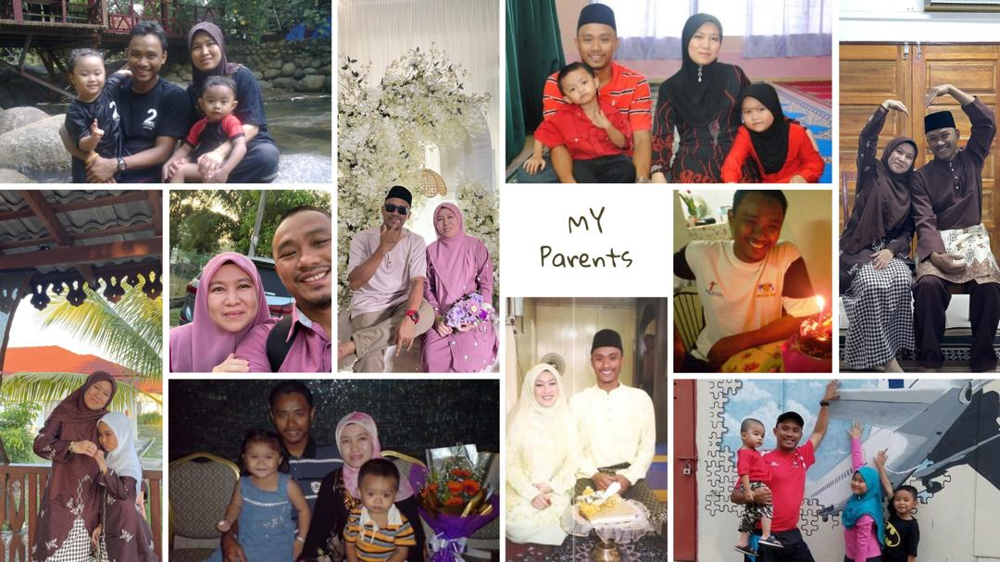
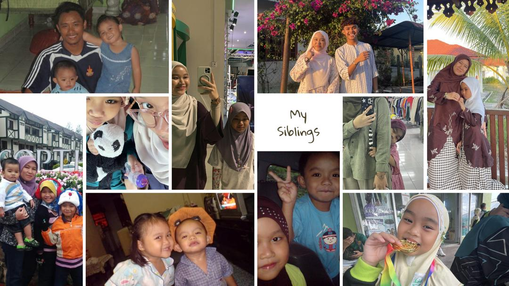
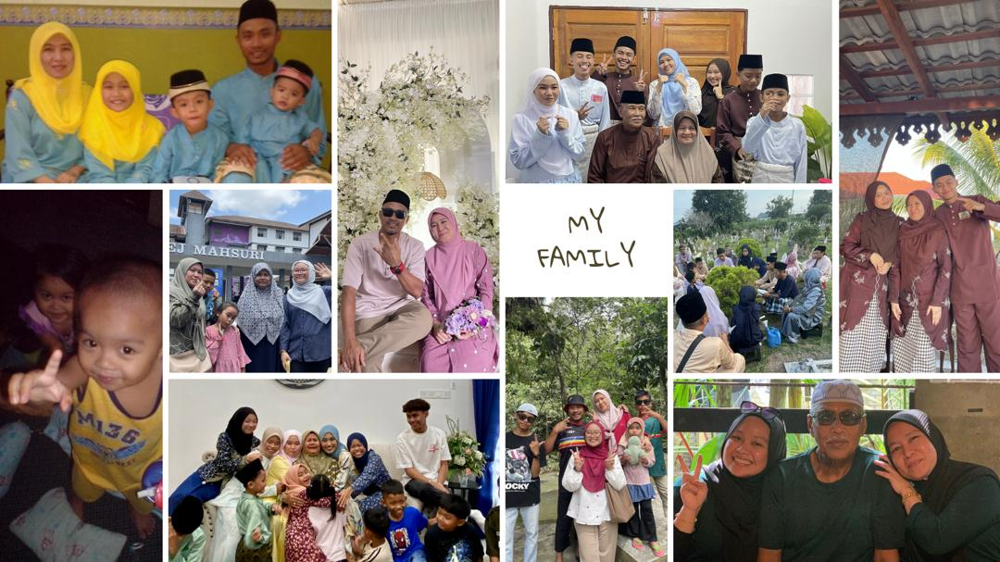

My parents are very supportive and caring. They have always encouraged me to work hard in my studies and strive for personal growth. Their guidance, motivation, and constant support help me overcome challenges and achieve my goals. I am grateful for everything they have done for me, and I appreciate the love and encouragement they continue to give me every day.

I come from a family of four siblings, and we enjoy spending quality time together through activities that we all love, particularly playing video games. On weekends, we often gather to relax, play games, and engage in various family activities. These shared experiences have helped us build a strong connection and create many meaningful memories. Spending time with my family is something I truly cherish, as it strengthens our relationships and contributes positively to my personal growth.

We enjoy celebrating special occasions together, such as birthdays, Hari Raya, and family trips. These events allow us to spend quality time as a family, share happy moments, and create lasting memories. We often gather to enjoy meals, take photos, and participate in fun activities. Spending time together during these celebrations helps strengthen our relationships and makes every occasion more meaningful.
